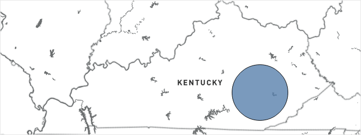

Berea College Promise Neighborhood
Clay, Jackson, and Owsley counties, KY
About the Neighborhood
Berea College Promise Neighborhood (BCPN) is a 2011 grantee and the first grantee to serve a rural area. Modeled after the Harlem Children’s Zone, BCPN provides substantial community support for its youth. The program strives to ensure success for young people “from the cradle to the career” by providing services to children and helping to strengthen support structures in the community and at home.
People
Nearly 40,000 residents,
majority white
majority white
6,300
K-12 students
K-12 students
Challenges
Poverty: The poverty rate in BCPN is three times the national poverty rate
Kindergarten readiness: Most children birth to kindergarten do not have access to early learning
Students at grade level: Lack of rigorous instruction in schools leading to low numbers of students at grade level
College attendance: Only 2 out of 5 high school graduates entered college; the majority have remedial needs
Physical activity/nutrition: Lack of physical activity by youth and with poor eating habits causing an obesity epidemic
Sources: BCPN 2011 Grant Application (https://www2.ed.gov/programs/promiseneighborhoods/2011narr/berea.pdf).
Place

An area of 961 square miles across Clay, Jackson, and Owsley counties in rural Appalachian Kentucky
An area of 961 square miles across Clay, Jackson, and Owsley counties in rural Appalachian Kentucky
Berea College Promise Neighborhood
Clay, Jackson, and Owsley counties, KY
Major strategies used
Early Steps to School Success provides high-quality professional development to preschool teachers
Use of Longitudinal Early Warning System to identify specific areas of academic need and provides interventions addressing those needs
Academic case management system includes school-based staff at all levels of the academic pipeline including ACT tutoring and completing college admission and scholarship applications
Health specialist helped plan activities such as before school physical activity and Healthy Food Ways programs
Selected Outcomes
Increase in kindergarteners entering school demonstrating age-appropriate functioning
Increase in students at or above proficient in English Language Arts
Increase in students at or above proficient in Mathematics
“Promise Neighborhood not only helped schools, teachers and families, they improved our community by providing lifelong daily skills which will impact us through eternity.”
— — BCPN Preschool Teacher